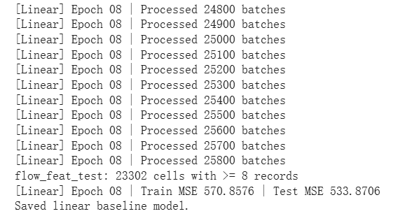
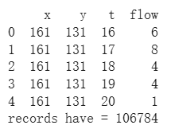

from google.colab import drive
drive.mount('/content/drive')
import duckdb
import pandas as pd
con = duckdb.connect("/content/drive/MyDrive/MOBILITY/mobility.duckdb")
con.execute("SHOW TABLES;").fetchdf()LSTM Spatial Flow Prediction: True Values, Predictions, and Absolute Error
1. Data and feature construction
We start from a DuckDB database mobility.duckdb stored in Google Drive.
1.1 Inspecting the base table
I first examine the DuckDB database to understand the structure of the input data. All available tables are listed to confirm that the base table flow_poi is present, and the schema of flow_poi is queried to obtain the full set of column names.
From these columns, all fields whose names start with poi_ are selected automatically. These poi_* variables describe the point-of-interest (POI) environment of each grid cell—for example, counts of food, shopping, or entertainment locations nearby. Together they form a POI feature vector, where each element represents the intensity of a POI category and provides a compact numerical description of local urban context.
A consistent feature ordering is then defined for later use in NumPy and PyTorch. The feature list begins with the current flow value, followed by all poi_* columns, and ends with four time-encoding features added in the next step: tod_sin, tod_cos, dow_sin, and dow_cos.
info = con.execute("PRAGMA table_info('flow_poi');").fetchall()
all_cols = [r[1] for r in info]
poi_cols = [c for c in all_cols if c.startswith("poi_")]
print("lens of POI", len(poi_cols))
print("5 poi:", poi_cols[:5])
1.2 Building the modeling table flow_feat
Next, a cleaned and feature-rich modeling table, flow_feat, is constructed directly inside DuckDB. This table transforms the raw records in flow_poi into supervised learning examples suitable for sequence models.
Construction proceeds in two steps. In the first step:
- the day (
d), time (t), and grid indices (x,y) are cast to integers; - missing values in all
poi_*columns are replaced with 0, ensuring POI features are defined for every cell; time_of_day = tis defined as a half-hour index from 0 to 47;dow = d % 7is defined as a day-of-week index from 0 to 6;- a global
time_index = d * 48 + tis created to flatten(day, half-hour)into a single time axis.
In the second step, each row is enriched with temporal encodings and a prediction target:
- sinusoidal encodings of time-of-day (
tod_sin,tod_cos) are computed to represent the 48 half-hour slots within a day on a circular scale; - sinusoidal encodings of day-of-week (
dow_sin,dow_cos) are computed to represent weekly periodicity; flow_nextis defined as the next half-hour flow for the same grid cell, using a window function over each(x, y)time series ordered by(d, t).
Finally, the grid indices (x, y), all model input features (flow, all poi_* columns, and the four time encodings), the target flow_next, and the global time_index are selected. Rows with missing flow_next (i.e., the final time step in a cell’s sequence) are dropped. The resulting flow_feat table is a clean, fully specified dataset ready for temporal train/test splitting and sequence construction.
feature_cols = ["flow"] + poi_cols + ["tod_sin", "tod_cos", "dow_sin", "dow_cos"]
con.execute(f"""
CREATE OR REPLACE TABLE flow_feat AS
WITH base AS (
SELECT
d::INT AS d,
t::INT AS t,
x::INT AS x,
y::INT AS y,
flow,
{", ".join([f"COALESCE({c}, 0) AS {c}" for c in poi_cols])},
t AS time_of_day,
d % 7 AS dow,
(d * 48 + t) AS time_index
FROM flow_poi
),
feat AS (
SELECT
*,
sin(2*PI()*time_of_day/48.0) AS tod_sin,
cos(2*PI()*time_of_day/48.0) AS tod_cos,
sin(2*PI()*dow/7.0) AS dow_sin,
cos(2*PI()*dow/7.0) AS dow_cos,
LEAD(flow) OVER (
PARTITION BY x, y
ORDER BY d, t
) AS flow_next
FROM base
)
SELECT
x,
y,
{", ".join(feature_cols)},
flow_next,
time_index
FROM feat
WHERE flow_next IS NOT NULL;
""")print(con.execute("SELECT COUNT(*) FROM flow_feat;").fetchall())
print(con.execute("PRAGMA table_info('flow_feat');").fetchall()[:15])
2. Train–test split and feature normalization
To prepare the data for modeling, a temporal split is applied to the feature table flow_feat. Because mobility patterns evolve over time, evaluation should be performed on future periods rather than on randomly shuffled samples. The dataset is therefore split using the global time_index:
- the 80th percentile of
time_indexis computed across all rows; - rows with
time_index≤ threshold form the training set (flow_feat_train); - rows with
time_index> threshold form the test set (flow_feat_test).
This split trains the model on earlier observations and evaluates it on genuinely later time periods.
After splitting, feature-wise means and standard deviations are computed only from the training set. These statistics are calculated for each model input feature in feature_cols and are later used to apply z-score normalization to both training and test sequences. Estimating normalization parameters from the training portion only avoids leaking information from the future into the model.
The resulting arrays, mean and std, store normalization parameters in a fixed order consistent with the feature layout used by NumPy and PyTorch.
# 80% threshold
import numpy as np
threshold = con.execute("""
SELECT quantile(time_index, 0.8) FROM flow_feat;
""").fetchone()[0]
con.execute("""
CREATE OR REPLACE TABLE flow_feat_train AS
SELECT * FROM flow_feat
WHERE time_index <= ?;
""", [threshold])
con.execute("""
CREATE OR REPLACE TABLE flow_feat_test AS
SELECT * FROM flow_feat
WHERE time_index > ?;
""", [threshold])
# mean / std
mean_row = con.execute(f"""
SELECT {", ".join([f"avg({c}) AS {c}" for c in feature_cols])}
FROM flow_feat_train;
""").fetchnumpy()
std_row = con.execute(f"""
SELECT {", ".join([f"stddev_samp({c}) AS {c}" for c in feature_cols])}
FROM flow_feat_train;
""").fetchnumpy()
mean = np.array([mean_row[c][0] for c in feature_cols], dtype="float32")
std = np.array([std_row[c][0] for c in feature_cols], dtype="float32") + 1e-63. Sequence Construction
Training sequences are constructed using three hyperparameters: SEQ_LEN = 8, STRIDE = 4, and BATCH_SIZE = 1024. With SEQ_LEN = 8, each sample consists of the most recent eight half-hour observations for a given grid cell, corresponding to a 4-hour historical window. A STRIDE of 4 shifts the sliding window forward by four time steps (two hours), preventing consecutive samples from being nearly identical. BATCH_SIZE = 1024 determines how many sequences are processed together in each mini-batch, providing a balance between computational efficiency and training stability.
Sequence generation begins from the tables flow_feat_train and flow_feat_test, with sequences built independently for each grid cell (x,y). Only cells appearing at least eight times are retained, ensuring that a full sequence of length SEQ_LEN is available. For each eligible cell, its rows are sorted by the global time_index to form an ordered time series. The columns listed in feature_cols are then extracted and standardized using the mean and standard deviation from the training set, placing all features on a comparable scale.
A fixed-length sliding window of size 8 is applied to each standardized cell-level time series, with window start positions at i=0,4,8,…, reflecting the chosen stride. Each window produces an input sequence consisting of eight consecutive half-hour records, and the prediction target is defined as the flow_next value associated with the final row in the window. Conceptually, each training example captures a 4-hour history and asks the model to predict the flow in the subsequent half-hour.
All resulting examples are grouped into mini-batches of size 1024. Each batch tensor X_batch has shape [1024,8,feature_dim], containing 1024 standardized sequences of length 8. The corresponding target vector y_batch has shape [1024], holding the next-step flow values. Both the linear baseline model and the LSTM model consume the same batch format during training and evaluation, meaning that any performance differences arise solely from how the two architectures interpret the same sequence input.
import numpy as np
import torch
from torch import nn
SEQ_LEN = 8
BATCH_SIZE = 1024
STRIDE = 4
def seq_batch_generator(table_name, batch_size=BATCH_SIZE, seq_len=SEQ_LEN, max_cells=None):
"""
Generate sequence batches from flow_feat_train / flow_feat_test.
X_batch: [batch, seq_len, feature_dim]
y_batch: [batch]
"""
cells = con.execute(f"""
SELECT x, y
FROM {table_name}
GROUP BY x, y
HAVING COUNT(*) >= {seq_len}
""").fetchall()
if max_cells is not None:
cells = cells[:max_cells]
print(f"{table_name}: {len(cells)} cells with >= {seq_len} records")
for (x_val, y_val) in cells:
res = con.execute(f"""
SELECT time_index, {", ".join(feature_cols)}, flow_next
FROM {table_name}
WHERE x = ? AND y = ?
ORDER BY time_index
""", [x_val, y_val]).fetchnumpy()
n = len(res["flow_next"])
if n < seq_len:
continue
feats = np.column_stack([res[c] for c in feature_cols]).astype("float32")
feats = (feats - mean) / std
y_vec = res["flow_next"].astype("float32")
X_buf, y_buf = [], []
for i in range(0, n - seq_len + 1, STRIDE):
X_seq = feats[i:i+seq_len] # [seq_len, F]
y_target = y_vec[i + seq_len - 1] # scalar
X_buf.append(X_seq)
y_buf.append(y_target)
if len(X_buf) == batch_size:
yield np.stack(X_buf), np.array(y_buf)
X_buf, y_buf = [], []
if len(X_buf) > 0:
yield np.stack(X_buf), np.array(y_buf)
4. Models
4.1 LSTM model
The first predictive model we use is an LSTM-based sequence model designed to capture temporal structure in mobility flows. Each input sample is a fixed-length sequence containing SEQ_LEN consecutive half-hour records for a single grid cell. Each record has the full feature vector consisting of the flow value, POI-based attributes, and the time-encoding variables.
The LSTM processes these sequences one time step at a time. As it moves through the eight input steps, it maintains a hidden state that summarizes the information accumulated so far. After the final time step, the hidden state represents the model’s understanding of the recent history of the cell.
To make a prediction, we take this final hidden state and feed it into a fully connected layer that outputs a single value: the predicted next-step flow. This structure allows the model to learn temporal dependencies, non-linear feature interactions, and recurring movement patterns across days.
The LSTM used here has: - batch-first input format, - a hidden size of 64, - two stacked recurrent layers, - and a final linear layer that maps the hidden representation into a scalar prediction.
The model is trained end-to-end with the Adam optimizer and mean squared error as the loss function.
import torch
from torch import nn
input_dim = len(feature_cols)
hidden_dim = 64
num_layers = 2
class FlowLSTM(nn.Module):
def __init__(self, input_dim, hidden_dim=64, num_layers=2):
super().__init__()
self.lstm = nn.LSTM(
input_size=input_dim,
hidden_size=hidden_dim,
num_layers=num_layers,
batch_first=True
)
self.fc = nn.Linear(hidden_dim, 1)
def forward(self, x):
# x: [B, L, F]
out, _ = self.lstm(x)
last_hidden = out[:, -1, :]
y_pred = self.fc(last_hidden)
return y_pred.squeeze(-1)
class LinearSeqModel(nn.Module):
def __init__(self, input_dim, seq_len):
super().__init__()
self.seq_len = seq_len
self.fc = nn.Linear(input_dim * seq_len, 1)
def forward(self, x):
# x: [B, L, F]
B, L, F = x.shape
x_flat = x.reshape(B, L * F)
y_pred = self.fc(x_flat)
return y_pred.squeeze(-1) 4.2 Linear sequence baseline
To provide a simple point of comparison, we also include a linear baseline model. Instead of using a recurrent structure, this model treats the entire input sequence as a single flat vector. All SEQ_LEN feature rows are concatenated into one long input, and the model applies a single fully connected layer to map this vector directly to a predicted next-step flow.
This baseline has no notion of temporal order or temporal dependency. It can only learn a weighted combination of the raw features but cannot model how patterns evolve over time. As a result, it serves as a useful reference for evaluating whether the LSTM’s recurrent structure truly provides additional predictive power.
Despite its simplicity, the linear model is fast to train and helps quantify the value of incorporating temporal dynamics into the prediction task.
device = torch.device("cuda" if torch.cuda.is_available() else "cpu")
print("Device:", device)
input_dim = len(feature_cols)
hidden_dim = 64
num_layers = 2
class FlowLSTM(nn.Module):
def __init__(self, input_dim, hidden_dim=64, num_layers=2):
super().__init__()
self.lstm = nn.LSTM(
input_size=input_dim,
hidden_size=hidden_dim,
num_layers=num_layers,
batch_first=True
)
self.fc = nn.Linear(hidden_dim, 1)
def forward(self, x):
# x: [B, L, F]
out, _ = self.lstm(x) # out: [B, L, H]
last_hidden = out[:, -1, :] # [B, H] -> last time step
y_pred = self.fc(last_hidden) # [B, 1]
return y_pred.squeeze(-1) # [B]
model = FlowLSTM(input_dim, hidden_dim, num_layers).to(device)
loss_fn = nn.MSELoss()
optimizer = torch.optim.Adam(model.parameters(), lr=1e-3)
print(model)@torch.no_grad()
def evaluate_mse_seq(table_name: str) -> float:
model.eval()
sq_sum = 0.0
n = 0
for X_batch, y_batch in seq_batch_generator(table_name, batch_size=BATCH_SIZE, seq_len=SEQ_LEN):
xb = torch.from_numpy(X_batch).to(device) # [B, L, F]
yb = torch.from_numpy(y_batch).to(device) # [B]
pred = model(xb) # [B]
sq_sum += ((pred - yb) ** 2).sum().item()
n += len(yb)
return sq_sum / n5. Training
5.1 Linear baseline model
The linear baseline model LinearSeqModel is a simple fully connected regressor that ignores temporal order within the input sequence. Each input batch X_batch initially has shape [B, L, F], where B is the batch size, L = SEQ_LEN is the number of time steps, and F is the feature dimension. Before feeding the data into the model, the tensor is reshaped to [B, L * F], so that all time steps in the sequence are concatenated into a single flat feature vector.
The model consists of one linear layer nn.Linear(input_dim * seq_len, 1) that maps this flattened sequence to a single scalar prediction. Training uses the Adam optimizer with a learning rate of 1e-3 and mean squared error (MSE) as the loss function. For each epoch, the code iterates over all sequence batches generated from the flow_feat_train table, performs forward and backward passes, and updates the model parameters. The training loop also accumulates the sum of squared errors to compute the training MSE.
After each epoch, the helper function evaluate_mse_linear is called on the flow_feat_test table to compute the test MSE using the same batching logic. This function runs the model in evaluation mode, iterates over all test batches, and returns the average squared error across all samples. Finally, the trained linear model weights are saved to flow_linear_seq_epoch8.pth as the linear baseline checkpoint.
import torch
from torch import nn
class LinearSeqModel(nn.Module):
def __init__(self, input_dim: int, seq_len: int):
"""
input_dim: len(feature_cols)
seq_len : SEQ_LEN
"""
super().__init__()
self.input_dim = input_dim
self.seq_len = seq_len
self.fc = nn.Linear(input_dim * seq_len, 1)
def forward(self, x):
"""
x: [B, L*F]
"""
y_pred = self.fc(x) # [B, 1]
return y_pred.squeeze(-1) # [B]
device = torch.device("cuda" if torch.cuda.is_available() else "cpu")
print("Device:", device)
input_dim = len(feature_cols)
lin_model = LinearSeqModel(input_dim=input_dim, seq_len=SEQ_LEN).to(device)
lin_loss_fn = nn.MSELoss()
lin_optimizer = torch.optim.Adam(lin_model.parameters(), lr=1e-3)
print(lin_model)
@torch.no_grad()
def evaluate_mse_linear(model, table_name: str, max_cells=None) -> float:
model.eval()
sq_sum = 0.0
n = 0
for X_batch, y_batch in seq_batch_generator(
table_name,
batch_size=BATCH_SIZE,
seq_len=SEQ_LEN,
max_cells=max_cells
):
xb = torch.from_numpy(X_batch).to(device) # [B, L, F]
yb = torch.from_numpy(y_batch).to(device) # [B]
xb = xb.reshape(xb.shape[0], -1) # [B, L*F]
pred = model(xb) # [B]
sq_sum += ((pred - yb) ** 2).sum().item()
n += len(yb)
return sq_sum / n
EPOCHS_LIN = 8
for epoch in range(1, EPOCHS_LIN + 1):
lin_model.train()
train_sq_sum = 0.0
train_n = 0
batch_idx = 0
for X_batch, y_batch in seq_batch_generator(
"flow_feat_train",
batch_size=BATCH_SIZE,
seq_len=SEQ_LEN,
max_cells=None
):
xb = torch.from_numpy(X_batch).to(device) # [B, L, F]
yb = torch.from_numpy(y_batch).to(device) # [B]
# flatten [B, L*F]
xb = xb.reshape(xb.shape[0], -1)
lin_optimizer.zero_grad()
pred = lin_model(xb) # [B]
loss = lin_loss_fn(pred, yb)
loss.backward()
lin_optimizer.step()
train_sq_sum += ((pred.detach() - yb) ** 2).sum().item()
train_n += len(yb)
batch_idx += 1
if batch_idx % 100 == 0:
print(f"[Linear] Epoch {epoch:02d} | Processed {batch_idx} batches")
# train / test MSE
train_mse = train_sq_sum / train_n
test_mse = evaluate_mse_linear(lin_model, "flow_feat_test", max_cells=None)
print(f"[Linear] Epoch {epoch:02d} | Train MSE {train_mse:.4f} | Test MSE {test_mse:.4f}")
torch.save(
lin_model.state_dict(),
"/content/drive/MyDrive/MOBILITY/flow_linear_seq_epoch8.pth"
)
print("Saved linear baseline model.")
5.2 LSTM training and checkpointing
The second training loop trains the LSTM-based sequence model defined earlier in the notebook. In contrast to the linear baseline, the LSTM takes input batches of shape [B, L, F] directly and processes the sequence along the time dimension, maintaining a hidden state to capture temporal dependencies.
The helper function evaluate_mse_seq mirrors the linear evaluation function, but it calls the sequence model directly on tensors of shape [B, L, F] without flattening. It runs the model in evaluation mode, iterates over all batches from the specified DuckDB table, and returns the mean squared error over all samples.
The main training loop runs for EPOCHS = 8. For each epoch, the model is set to training mode, and batches are drawn from the flow_feat_train table using seq_batch_generator. For every batch, the code moves the data to the selected device (CPU or GPU), performs a forward pass through the LSTM, computes the MSE loss, backpropagates the gradients, and updates the parameters with the chosen optimizer. The loop accumulates the sum of squared errors to compute the epoch-level training MSE, and every 100 batches it prints a progress message.
At the end of each epoch, evaluate_mse_seq is called on the flow_feat_test table to obtain the test MSE. The code then saves a checkpoint file under checkpoints_lstm/, containing the current epoch index, the model and optimizer state dictionaries, and the train/test MSE values. This allows intermediate models to be restored later if needed. After the final epoch, the model’s state dictionary is also saved separately to flow_lstm_final.pth as the final LSTM checkpoint.
import os
# checkpoint
ckpt_dir = "/content/drive/MyDrive/MOBILITY/checkpoints_lstm"
os.makedirs(ckpt_dir, exist_ok=True)
# ----- training loop ----- checkpoint
EPOCHS = 8
@torch.no_grad()
def evaluate_mse_seq(table_name: str, max_cells=None) -> float:
model.eval()
sq_sum = 0.0
n = 0
for X_batch, y_batch in seq_batch_generator(
table_name,
batch_size=BATCH_SIZE,
seq_len=SEQ_LEN,
max_cells=max_cells
):
xb = torch.from_numpy(X_batch).to(device) # [B, L, F]
yb = torch.from_numpy(y_batch).to(device) # [B]
pred = model(xb) # [B]
sq_sum += ((pred - yb) ** 2).sum().item()
n += len(yb)
return sq_sum / n
for epoch in range(1, EPOCHS + 1):
model.train()
train_sq_sum = 0.0
train_n = 0
batch_idx = 0
# Here you can set max_cells for debugging; set to None for full data
for X_batch, y_batch in seq_batch_generator(
"flow_feat_train",
batch_size=BATCH_SIZE,
seq_len=SEQ_LEN,
max_cells=None
):
xb = torch.from_numpy(X_batch).to(device)
yb = torch.from_numpy(y_batch).to(device)
optimizer.zero_grad()
pred = model(xb)
loss = loss_fn(pred, yb)
loss.backward()
optimizer.step()
train_sq_sum += ((pred.detach() - yb) ** 2).sum().item()
train_n += len(yb)
batch_idx += 1
if batch_idx % 100 == 0:
print(f"Epoch {epoch:02d} | Processed {batch_idx} batches so far")
train_mse = train_sq_sum / train_n
test_mse = evaluate_mse_seq("flow_feat_test", max_cells=None)
print(f"Epoch {epoch:02d} | Train MSE {train_mse:.4f} | Test MSE {test_mse:.4f}")
ckpt_path = os.path.join(ckpt_dir, f"flow_lstm_epoch{epoch:02d}.pth")
torch.save(
{
"epoch": epoch,
"model_state_dict": model.state_dict(),
"optimizer_state_dict": optimizer.state_dict(),
"train_mse": train_mse,
"test_mse": test_mse,
},
ckpt_path,
)
print(f"Saved checkpoint to {ckpt_path}")
final_path = "/content/drive/MyDrive/MOBILITY/flow_lstm_final.pth"
torch.save(model.state_dict(), final_path)
print(f"Saved final model to {final_path}")
6. Spatial visualization
To understand where and when the models perform well, we visualize predictions across the spatial grid. The idea is to fix a specific day and one or more time-of-day slots, reconstruct the historical sequences for each grid cell at those times, run the trained model, and compare its predictions with the true flows.
The visualization works in two modes:
- Single time slice
- Choose a day and an eight-step window within that day.
- For the final time step of the window, identify all grid cells that have a valid next-step flow.
- For each of these cells, retrieve the preceding
SEQ_LENrecords to form a complete history. - After running the model, create a spatial plot showing:
- the true next-step flow,
- the model’s predicted flow,
- and the absolute error.
d0 = 64
import matplotlib.pyplot as plt
start_t = 16
window_len = 8
end_t = start_t + window_len - 1
window_df = con.execute("""
SELECT
x,
y,
(time_index % 48) AS t,
flow
FROM flow_feat_test
WHERE (time_index / 48)::INT = ?
AND (time_index % 48) BETWEEN ? AND ?
""", [d0, start_t, end_t]).fetchdf()
print(window_df.head())
print("records have =", len(window_df))import torch
import pandas as pd
import numpy as np
t_plot = end_t
snap_true = con.execute(f"""
SELECT
x,
y,
flow_next AS target,
time_index
FROM flow_feat_test
WHERE (time_index / 48)::INT = ?
AND (time_index % 48) = ?;
""", [d0, t_plot]).fetchdf()
print("cells at this time step:", len(snap_true))
X_list, target_list, x_list, y_list = [], [], [], []
for idx, row in snap_true.iterrows():
x0 = int(row["x"])
y0 = int(row["y"])
T = int(row["time_index"])
y_true = float(row["target"])
seq_df = con.execute(f"""
SELECT time_index, {", ".join(feature_cols)}
FROM (
SELECT time_index, {", ".join(feature_cols)}
FROM flow_feat_test
WHERE x = ? AND y = ?
AND (time_index / 48)::INT = ?
AND time_index <= ?
ORDER BY time_index DESC
LIMIT ?
)
ORDER BY time_index;
""", [x0, y0, d0, T, SEQ_LEN]).fetchdf()
if len(seq_df) < SEQ_LEN:
continue
feats = seq_df[feature_cols].to_numpy(dtype="float32")
feats_norm = (feats - mean) / std
X_list.append(feats_norm)
target_list.append(y_true)
x_list.append(x0)
y_list.append(y0)
print("usable cells with full 8-step history:", len(X_list))
X = np.stack(X_list).astype("float32") # [N, L, F]
y_true_arr = np.array(target_list, dtype="float32")
model.eval()
with torch.no_grad():
xb = torch.from_numpy(X).to(device) # [N, L, F]
pred_arr = model(xb).cpu().numpy() # [N]snap = pd.DataFrame({
"x": x_list,
"y": y_list,
"flow_true": y_true_arr, # true next-step flow
"flow_pred": pred_arr, # LSTM predicted next-step flow
})
snap["err_abs"] = np.abs(snap["flow_pred"] - snap["flow_true"])import matplotlib.pyplot as plt
vmin = np.percentile(snap["flow_true"], 5)
vmax = np.percentile(snap["flow_true"], 95)
err_max = np.percentile(snap["err_abs"], 95)
fig, axes = plt.subplots(1, 3, figsize=(18, 6), sharex=True, sharey=True)
ax = axes[0]
sc0 = ax.scatter(
snap["x"], snap["y"],
c=snap["flow_true"],
s=10,
cmap="plasma",
vmin=vmin,
vmax=vmax
)
ax.set_title("True next-step flow")
ax.set_aspect("equal")
ax.grid(False)
plt.colorbar(sc0, ax=ax, label="flow_true")
ax = axes[1]
sc1 = ax.scatter(
snap["x"], snap["y"],
c=snap["flow_pred"],
s=10,
cmap="plasma",
vmin=vmin,
vmax=vmax
)
ax.set_title("LSTM predicted next-step flow")
ax.set_aspect("equal")
ax.grid(False)
plt.colorbar(sc1, ax=ax, label="flow_pred")
ax = axes[2]
sc2 = ax.scatter(
snap["x"], snap["y"],
c=snap["err_abs"],
s=10,
cmap="magma",
vmin=0,
vmax=err_max
)
ax.set_title("|pred − true|")
ax.set_aspect("equal")
ax.grid(False)
plt.colorbar(sc2, ax=ax, label="abs error")
for ax in axes:
ax.set_xlabel("x")
axes[0].set_ylabel("y")
minutes = t_plot * 30
hh = minutes // 60
mm = minutes % 60
plt.suptitle(f"Day {d0}, t={t_plot} (~{hh:02d}:{mm:02d}) – next-step flow", fontsize=14)
plt.tight_layout()
plt.show()
- Multiple time slices
- Select several time-of-day indices on the same day.
- Repeat the above process for each time, stacking the resulting maps side-by-side.
- The first row displays true flows, the second row shows predictions, and the third row shows absolute errors.
- Shared color scales allow visual comparison across time.
These visualizations reveal spatial heterogeneity in both mobility patterns and model performance. They help identify when the model struggles, which regions tend to be more predictable, and how flow dynamics evolve over the day.
d0 = 64
t_list = [8, 12, 16, 20, 24, 28]
snap_list = []
model.eval()
for t_plot in t_list:
snap_true = con.execute("""
SELECT
x,
y,
flow_next AS target,
time_index
FROM flow_feat_test
WHERE (time_index / 48)::INT = ?
AND (time_index % 48) = ?;
""", [d0, t_plot]).fetchdf()
X_list, target_list, x_list, y_list = [], [], [], []
for idx, row in snap_true.iterrows():
x0 = int(row["x"])
y0 = int(row["y"])
T = int(row["time_index"])
y_true = float(row["target"])
seq_df = con.execute(f"""
SELECT time_index, {", ".join(feature_cols)}
FROM (
SELECT time_index, {", ".join(feature_cols)}
FROM flow_feat_test
WHERE x = ? AND y = ?
AND (time_index / 48)::INT = ?
AND time_index <= ?
ORDER BY time_index DESC
LIMIT ?
)
ORDER BY time_index;
""", [x0, y0, d0, T, SEQ_LEN]).fetchdf()
if len(seq_df) < SEQ_LEN:
continue
feats = seq_df[feature_cols].to_numpy(dtype="float32")
feats_norm = (feats - mean) / std
X_list.append(feats_norm)
target_list.append(y_true)
x_list.append(x0)
y_list.append(y0)
if len(X_list) == 0:
print(f"t={t_plot} no enough")
continue
X = np.stack(X_list).astype("float32")
y_true_arr = np.array(target_list, dtype="float32")
with torch.no_grad():
xb = torch.from_numpy(X).to(device)
y_pred_arr = model(xb).cpu().numpy()
snap = pd.DataFrame({
"x": x_list,
"y": y_list,
"flow_true": y_true_arr,
"flow_pred": y_pred_arr,
})
snap["err_abs"] = np.abs(snap["flow_pred"] - snap["flow_true"])
snap["t_plot"] = t_plot
snap_list.append(snap)
print("usable time points", len(snap_list))all_snap = pd.concat(snap_list, ignore_index=True)
vmin = np.percentile(all_snap["flow_true"], 5)
vmax = np.percentile(all_snap["flow_true"], 95)
err_max = np.percentile(all_snap["err_abs"], 95)
n_times = len(snap_list)
snap_list_sorted = sorted(snap_list, key=lambda s: s["t_plot"].iloc[0])
fig, axes = plt.subplots(
3, n_times,
figsize=(3.0 * n_times, 8),
sharex=True, sharey=True
)
sc_true = None
sc_err = None
for j, snap in enumerate(snap_list_sorted):
t_plot = snap["t_plot"].iloc[0]
ax = axes[0, j]
sc_true = ax.scatter(
snap["x"], snap["y"],
c=snap["flow_true"],
s=5,
cmap="plasma",
vmin=vmin, vmax=vmax
)
ax.set_title(f"t={t_plot} True", fontsize=10)
ax.set_aspect("equal")
ax.grid(False)
ax = axes[1, j]
ax.scatter(
snap["x"], snap["y"],
c=snap["flow_pred"],
s=5,
cmap="plasma",
vmin=vmin, vmax=vmax
)
ax.set_title(f"t={t_plot} Pred", fontsize=10)
ax.set_aspect("equal")
ax.grid(False)
ax = axes[2, j]
sc_err = ax.scatter(
snap["x"], snap["y"],
c=snap["err_abs"],
s=5,
cmap="magma",
vmin=0, vmax=err_max
)
ax.set_title(f"t={t_plot} |Pred−True|", fontsize=10)
ax.set_aspect("equal")
ax.grid(False)
for j in range(n_times):
axes[2, j].set_xlabel("x")
for i in range(3):
axes[i, 0].set_ylabel("y")
plt.subplots_adjust(
left=0.06, right=0.9,
top=0.9, bottom=0.08,
wspace=0.05, hspace=0.12
)
cbar1 = fig.colorbar(
sc_true,
ax=axes[0:2, -1],
fraction=0.046,
pad=0.02
)
cbar1.set_label("flow")
cbar2 = fig.colorbar(
sc_err,
ax=axes[2, -1],
fraction=0.046,
pad=0.04
)
cbar2.set_label("abs error")
plt.suptitle(f"Day {d0} – 6 time steps: True / Pred / Error", fontsize=14)
plt.show()
Conclusion
The results demonstrate that temporal modeling is essential for predicting grid-based mobility flows. The linear baseline, which treats the input sequence as a single flattened vector, fails to capture temporal structure: its test MSE is more than two orders of magnitude worse than that of the LSTM. In contrast, the LSTM achieves stable performance (train MSE ≈ 3.79, test MSE ≈ 4.15), indicating that it successfully learns short-term temporal dependencies in the flow dynamics.
Spatial visualizations further confirm this pattern. Across six representative time steps on Day 64, the LSTM reproduces the broad spatial structure of flow, accurately matching both low-flow regions and the major concentration zones. Prediction errors are primarily concentrated in high-intensity areas—locations where flow is both larger in magnitude and more volatile. This suggests that the LSTM captures routine, low-variance mobility well, while sudden spikes or irregular flow patterns remain harder to model.
Overall, the experiment shows that: 1. Temporal information is crucial for mobility forecasting. 2. Even a relatively small LSTM (hidden size 64, two layers) is sufficient to outperform non-temporal baselines by a wide margin. 3. The remaining errors are spatially structured, pointing toward opportunities for future extensions such as attention mechanisms or spatial graph models.
The LSTM therefore provides a strong foundation for next-step mobility prediction, and the spatial evaluation highlights where more advanced models may yield additional gains.